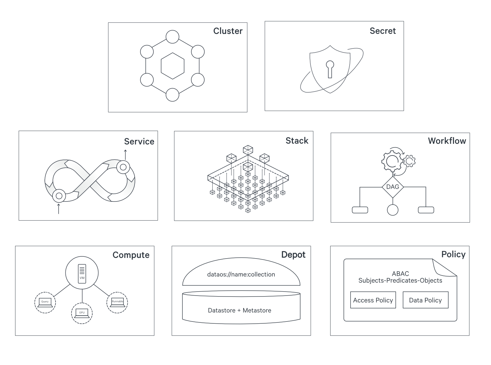
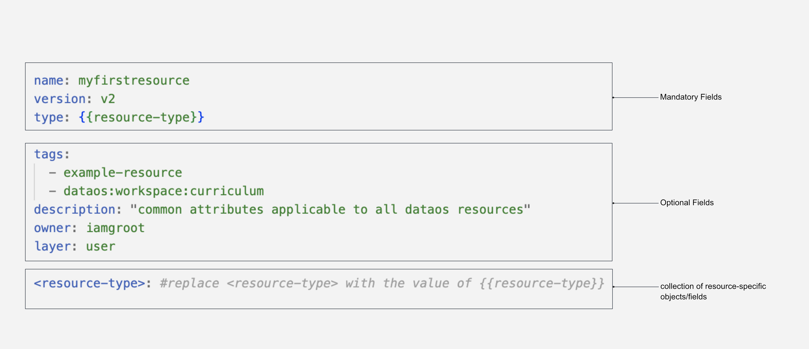

DataOS Resources¶
DataOS Resources are atomic & logical units with their own life cycle. They can be composed together and also with other components to act as the building blocks of the system. Each Resource represents a higher-level abstraction which can be source controlled and managed using a version control system.
DataOS Resources are categorized into two categories - Workspace-level Resources & Platform-level Resources.

Types of DataOS Resources¶
You can get an overview of each of these Resources on the following page - Types of DataOS Resources. It is essential to note here that, as a data developer, you should think & plan your workloads in terms of DataOS Resources - that is also how the system works & has been built.
Overarching Values¶
Each DataOS Resource has been built for a specific purpose, for instance, Workflow has been built to run batch jobs, while Depot has been built to provide JDBC/ODBC connections to various data sources. The Resources are interoperable and can be composed together to implement various architectural designs for the data infrastructure of choice.
Whether it is Lakehouse Architecture, Data Mesh, Data-first Stack or as an operational layer providing a unified experience on top of an existing data architecture - Resources confer the data operating system with modularization that allows it to be used for any of these use cases. The page on Traits of DataOS Resources describes the common properties enveloped within each DataOS Resource.
Configuration of Resources¶
An instance of any DataOS Resource behaves as an object or entity within the operating system and is created, deployed & managed from the interfaces of the system - CLI and GUI. These interfaces interact with various Resources, system services & applications via APIs. As such, a data developer can also use the APIs to interact directly with the system.
Each instance of a Resource is defined by a collection of attributes declared in a YAML-based configuration file. These attributes are stipulated as key-value properties that describe the desired state of data products, pipelines, applications or services. The operating system automates & abstracts away the underlying complexities such as transpilation, protocols, provisioning of the computing resources and reconciliation of the current state with the desired state.
The image represents the configuration file of DataOS Resources.

The configuration files are strongly-typed, and the system flags an error when Resource files are applied with incorrect syntax. The table below gives an overview of how these attributes/fields are filled.
| Field | Data Type | Default Value | Requirement |
|---|---|---|---|
name |
string | none | mandatory |
version |
string | none | mandatory |
type |
string | none | mandatory |
tags |
string | depending on the Resource-instance, various tags are assigned by default | optional |
description |
string | none | optional |
owner |
string | id of the user who deploys the Resource | optional |
layer |
string | user | optional |
<resource-type> |
mapping | none | mandatory |
Each Resource-type has a different evolutionary journey and usage. Hence, the values for fields, like version and type, are dependent on the Resource-type. The Attributes of Resource Meta section elucidates all fields and possible values which can be assigned for each of the key-value pair.
These attributes not only define the instance of the Resource being deployed, but are stored as a ‘record of intent’ - once created, the underlying system will constantly work to ensure that the Resource exists and try to reconcile the current & desired states.
CRUD Operations on DataOS Resources¶
The interfaces of DataOS allow the users to interact with the Resources in a consistent & seamless manner. Depending on the users’ access level, they can perform all the CRUD actions and deploy the Resources through the Command Line Interface, while the Graphical User Interface provides a limited set of capabilities to manage these Resources.
Users of the operating system interact with the instances of DataOS Resources in the User Space, which acts as an abstraction and a translation layer over the Kernel layers of the system. The commands to deploy & manage these Resource-instances have been enumerated below.
Apply¶
Used to create, update & deploy a Resource-instance
dataos-ctl apply -f {{file path}}
When you apply an updated configuration file of a Resource, it gets appended by a rolling update, so that the old version is dropped only after the new version is up and running. Both the versions of the file are automatically stored in the system for auditing and record keeping.
Get¶
Used for read operations
dataos-ctl get -t {{type of Resource}} -n {{name of the Resource-instance}}
# alternate command
dataos-ctl get -i "{{name:version:type}}"
Delete¶
To delete an existing instance of a Resource from the system
dataos-ctl delete -t {{type of Resource}} -n {{name of Resource-instance}}
# alternate command
dataos-ctl delete -i "{{name:version:type}}"
A Resource-instance once deleted cannot be restored again by the system. The user has to redeploy it again using the
applycommand, if and when required.
Lint¶
To run the linter & check for possible errors in the config file of the Resource-instance.
dataos-ctl apply -f {{file path}} -l
The linter identifies only specific kinds of errors in the config file. For a more detailed analysis of the errors, one would need to check the logs for the failed Resource-instance.
Logs¶
Check the logs for the Resource-instance
dataos-ctl log -t {{type of Resource}} -n {{name of Resource-instance}}
The operating system supports various log-levels for the Resources, such as INFO & DEBUG, among others. The details in the logs will depend upon the log-level set in the config file of the Resource-instance.
While these commands are applicable across all Resource-types, the Workspace-level Resources require the user to specify the Workspace in which these Resources are deployed. Hence, for these Resource-types, viz. Cluster, Secret, Service and Workflow, the above listed commands are always appended with a flag -w.
For example, to read information around a workflow, run the following command.
dataos-ctl get -t {{type of Resource}} -w {{workspace name}} -n {{name of the Resource-instance}}
# alternate command
dataos-ctl get -i "{{name:version:type:workspace}}"
If no flag is mentioned at the time of applying the Resource, it is deployed in the public workspace, which is the common tenant for your entire organisation to work in.
Features of a YAML Configuration File¶
Configuration files for all Resources are written in YAML form. It’s necessary for the user to get acquainted with the features and capabilities of YAML to effectively work with the operating system. For example, you can use environment variable references in the config file to set values that need to be configurable during deployment.
To parse environment variables in the configuration file of a Resource, follow these steps:
-
Create the config file by using the following syntax for values in the config file - ${VARIABLE1} or $VARIABLE1
version: name: ${VARIABLE1} owner: type: tags: - sample_resource layer: description: "this is not the complete config file" workflow: schedule: dag: - name: spec: stack: flare:4.0 compute: flare: job: explain: true logLevel: ${VARIABLE2} showPreviewLines: 2 inputs: steps: outputs: -
The values for the fields, where environment variables have been used, can now be set while applying the config file through DataOS CLI.
VARIABLE1=value1 VARIABLE2=value2 dataos-ctl apply -f {{file-path}} -
The system will take
value1&value2for attributesname&logLevelrespectively. This is the config file that will be orchestrated by the system:version: name: value1 owner: type: tags: - sample_resource layer: description: "this is not the complete config file" workflow: schedule: dag: - name: spec: stack: flare:4.0 compute: flare: job: explain: true logLevel: value2 showPreviewLines: 2 inputs: steps: outputs:
Here are more features and syntaxes to be kept in mind while writing a YAML configuration files.
DataOS Resources are the lynchpin around which the unified architecture of the data operating system has been built. They make the system modular, composable, interoperable and flexible, while abstracting away the system complexities, allowing users to focus on the outcomes, such as data products, rather than the arduous process of how those outcomes are achieved.